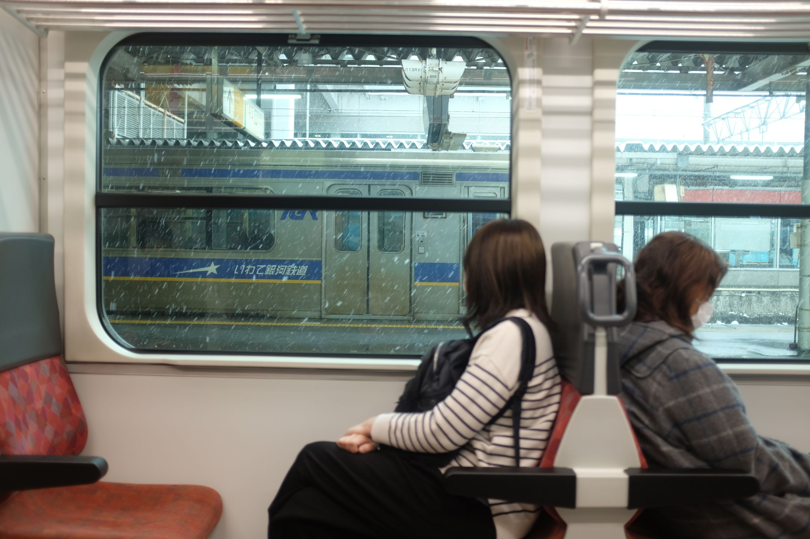
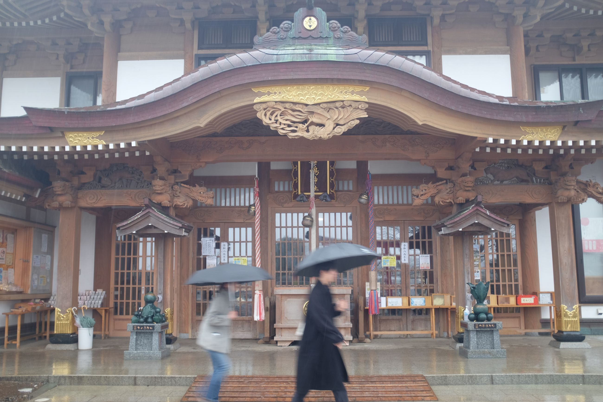
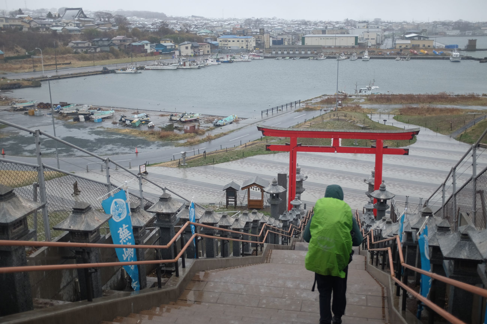
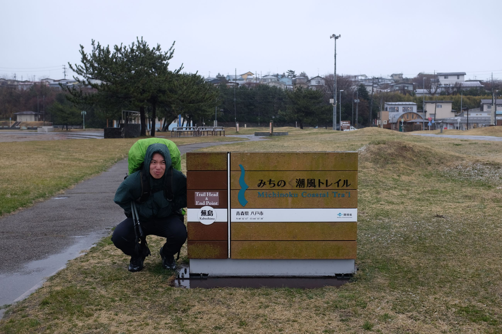
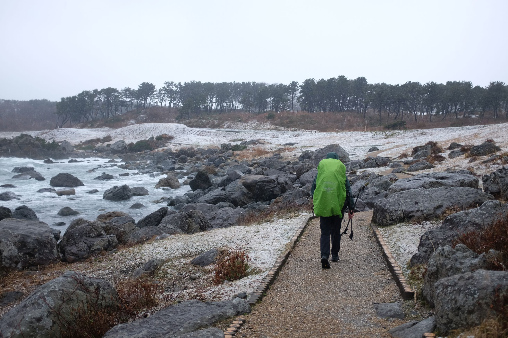
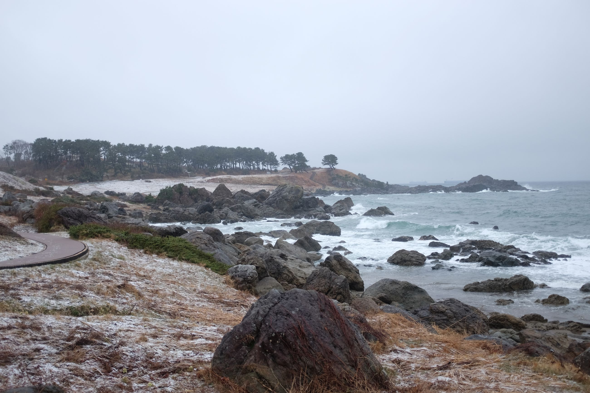
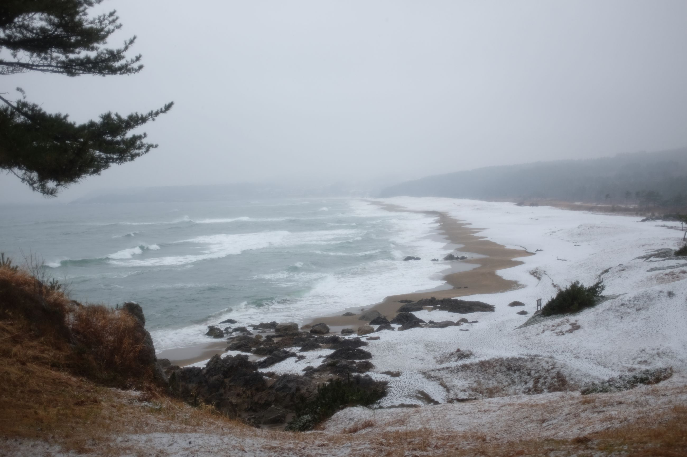
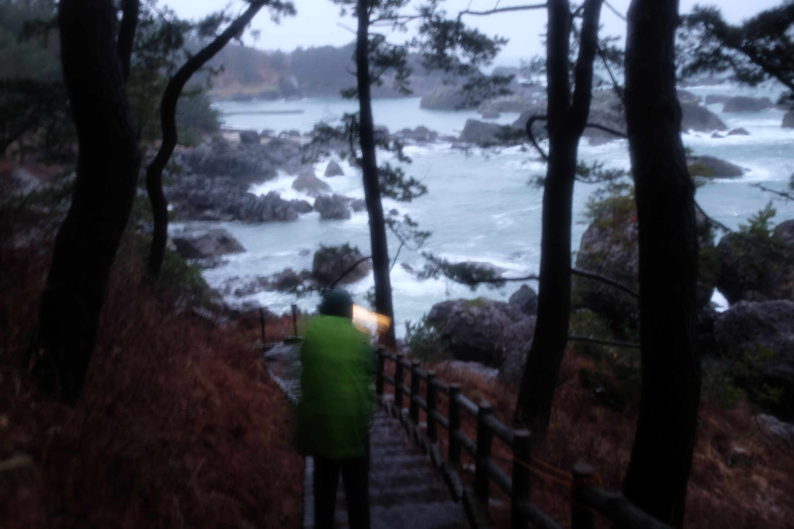
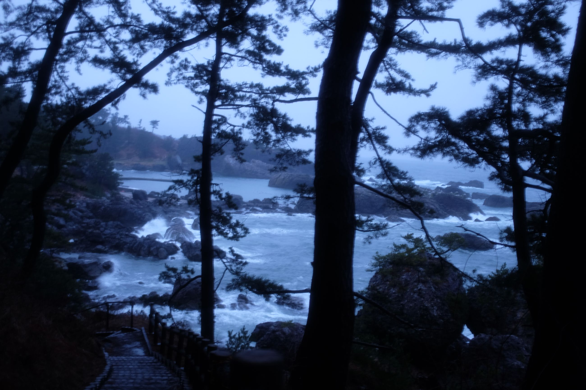
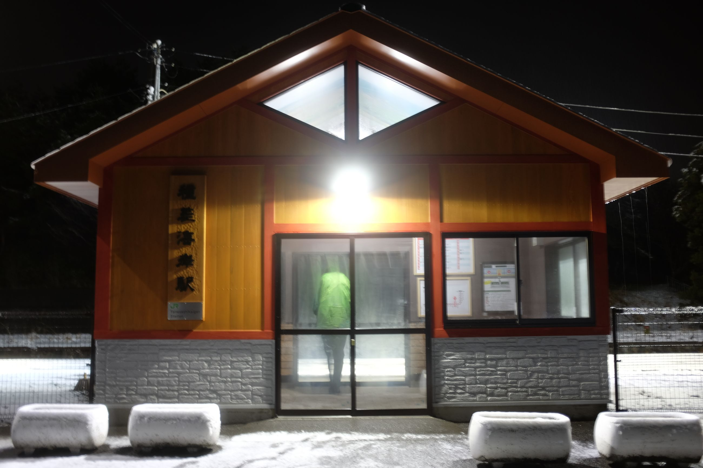

Not the start we thought we would have: pouring rain, and then snow.

Kabushimi Shrine was barren. The staff looked onto us sadly as we stood in the rain, just saw it and left, trying to find the trail head.


The trail starts off looking at the coast with some view of the harbour. It's not well built, but manageable. In the rain, there's a bit of mud, but we trudge on.



The most memorable section was the Nakasuka Coast and Osuka Beach. Being able to see a beach from afar in the rain, but recently covered in snow, was a new sight. Brushes of white from the waves, transitioning into sand exposed from washed-away snow, and then a blanket of snow. I never thought I could see something like that.

And then the last section. If it were dusk, I imagine it would be one of the most scenic parts of the trail. Partially dense forest with a short trail running through it, surrounded by the sound of waves. It reminds me of the California coastal walks I grew up with. It is the same ocean.
 
Two kilometres out of our final destination, we decide to go to one station before Okuki to take the train. But turns out the trains are stopped due to a tree falling on the tracks. Our AirBnB host graciously comes to pick us up and have dinner with us in Hirono (part of Taneichi, where we are staying). We chat briefly -- he is an illustrator -- and then we head to the AirBnB.

Let's see what adventures (and weather) tomorrow brings.